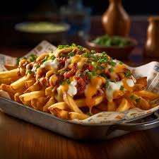

Loaded Fries

Description
Fries with pizza toppings - just like the pizza place makes!
Great snack or lunchtime treat. You can make this like you would your favorite pizza -
add any toppings you like. Enjoy!
Ingredients
- 1 (32 ounce) package frozen French fries
- cooking spray
- 1 ½ cups pizza sauce, or to taste
- 1 teaspoon oregano
- 1 (12 ounce) package shredded mozzarella cheese
- 1 (8 ounce) package sliced pepperoni
- 1 teaspoon dried parsley flakes
Steps
- Preheat oven to 400 degrees F (200 degrees C).
- Spread fries onto a baking sheet and coat with cooking spray.
- Bake in the preheated oven until crispy, 35 to 40 minutes.
- Mix pizza sauce and oregano together in a bowl; pour over fries. Sprinkle mozzarella cheese over sauce mixture and top with pepperoni slices. Sprinkle parsley over sauce and pepperoni.
- Turn the oven to broil.
- Broil fries until cheese is browned and bubbling, 2 to 4 minutes.
- Assemble and Enjoy!